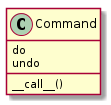

The Command Pattern¶
This is just a bunch of notes so it can’t really be read, but it’s a reference for the Commands.
| Class | Property |
|---|---|
| Client | Creates ConcreteCommand |
| Sets ConcreteCommand’s Receiver | |
| Invoker | Holds Command |
| calls the Command’s execute method | |
| Receiver | Knows how to do the actions in the Commands execute |
| ConcreteCommand | Maps execute to a sequence of receiver actions |
- Encapsulates a request as an object
- Lets you parameterize other objects with different requests
- Allows you to que or log requests
- Supports undo-able operations
Encapsulating Requests¶
THe Command packages multiple action on a Receiver but only exposes the execute method.
Parameterize Other Objects¶
Because only the execute is exposed, you can create different commands that call a different sequence of actions and substitute them.
Undo¶
The Invoker.set_command method should take three parameters:
- a unique identifier (index if invoker holds a list of commands or key if it uses a dictionary)
- a command
- a command that undoes the command
Whenever the invoker’s method is called it sets the last command so that if the undo is called it knows what to call to undo it.
An alternative is to use a list of commands called so that you can do multiple undos.
Queing¶
Because a Command bundles a set of actions, you can queue them so that they are executed in sequence. This allows the consumer of the queue to be completely ignorant of how the actual commands work or what they do.
Logging¶
- add a store() after each execute() that log’s the action and parameters
- add a load() method that can read the log entry and call the same action
MacroCommand¶
If the Invoker needs to call multiple commands, create a MacroCommand that contains a list of commands and calls them in order.
Python Implementation¶
The following implementation was taken from Python In Practice (which as of this writing has not been published but is accessible via Safari Books).
Command¶
Instead of using sub-classing it composes functions (called do and undo). It assumes that do is callable and calls it when it is called. The Command class is an adapter that aliases the function passed in behind its __call__ method. It checks the do and undo functions passed in are callable and raises an AssertionError if they are not.

class Command(object):
"""
The Command adapts functions to the command-pattern
"""
def __init__(self, do, undo, description=""):
"""
Command constructor
:param:
- `do`: callable function
- `undo`: callable function that un-does what do does
- `description`: description of the command
"""
assert isinstance(do, collections.Callable)
assert isinstance(undo, collections.Callable)
self.do = do
self.undo = undo
return
def __call__(self):
self.do()
return
# end class Command
Macro¶
The Macro bundles commands. Besides using the Command as an adapter you can use it as a check by requiring that the Macro only take commands. Then again you can just check that the command is callable.

class Macro(object):
"""
A Macro bundles commands.
"""
def __init__(self, description=""):
self.description = description
self._commands = []
return
def add(self, command):
"""
:param:
- `command`: Command implementation
"""
if not(isinstance(command, Command)):
raise TypeError("Expected object of type Command, got {0}".form
at(type(Command)))
self._commands.append(command)
return
def __call__(self):
"""
The main interface -- calls all commands
"""
for command in self._commands:
command()
return
def undo(self):
"""
Calls commands' undos in reverse order
"""
for command in reversed(self._commands):
command.undo()
return
# end class Macro